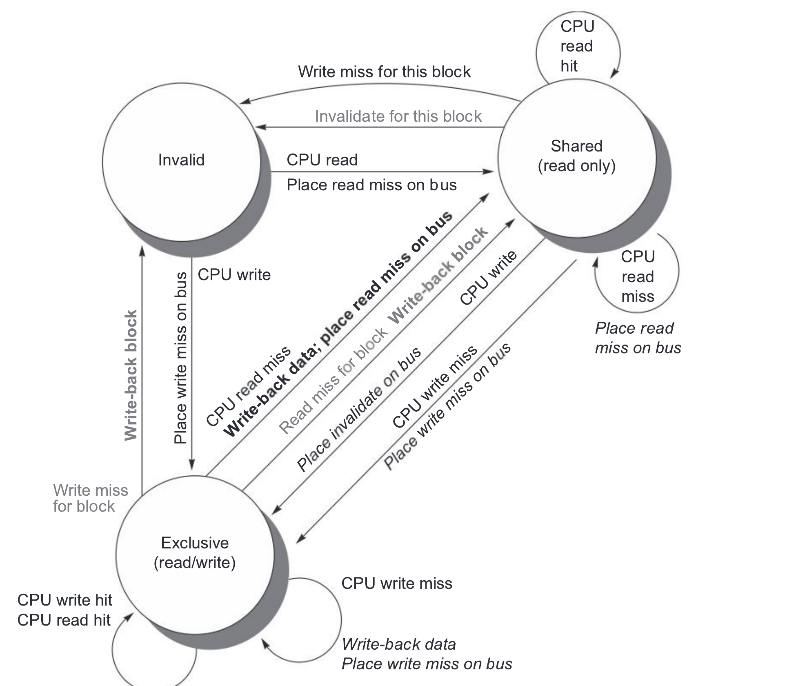
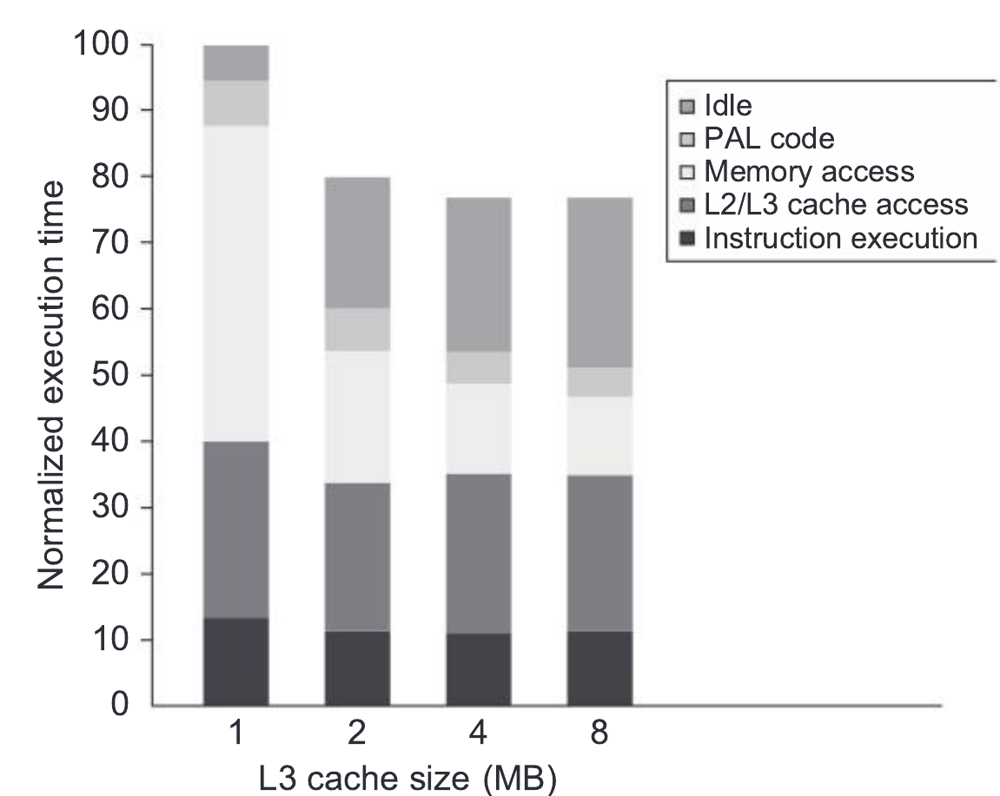
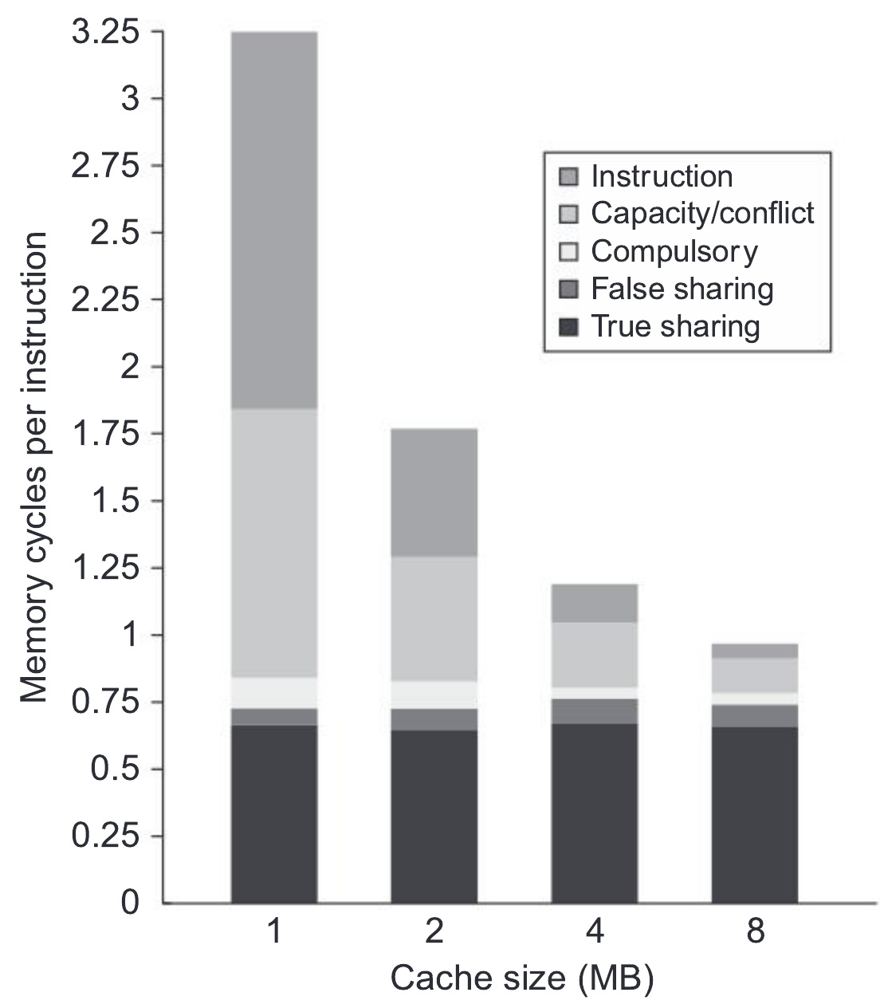
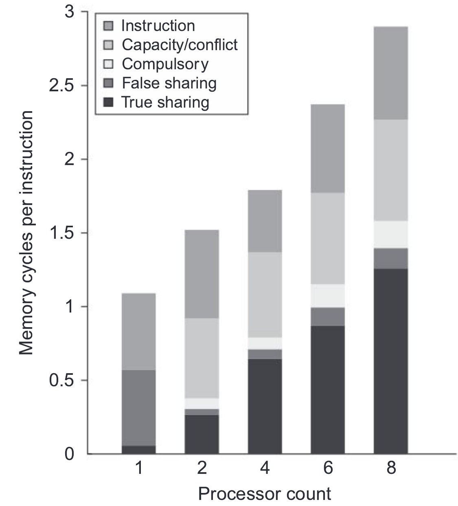
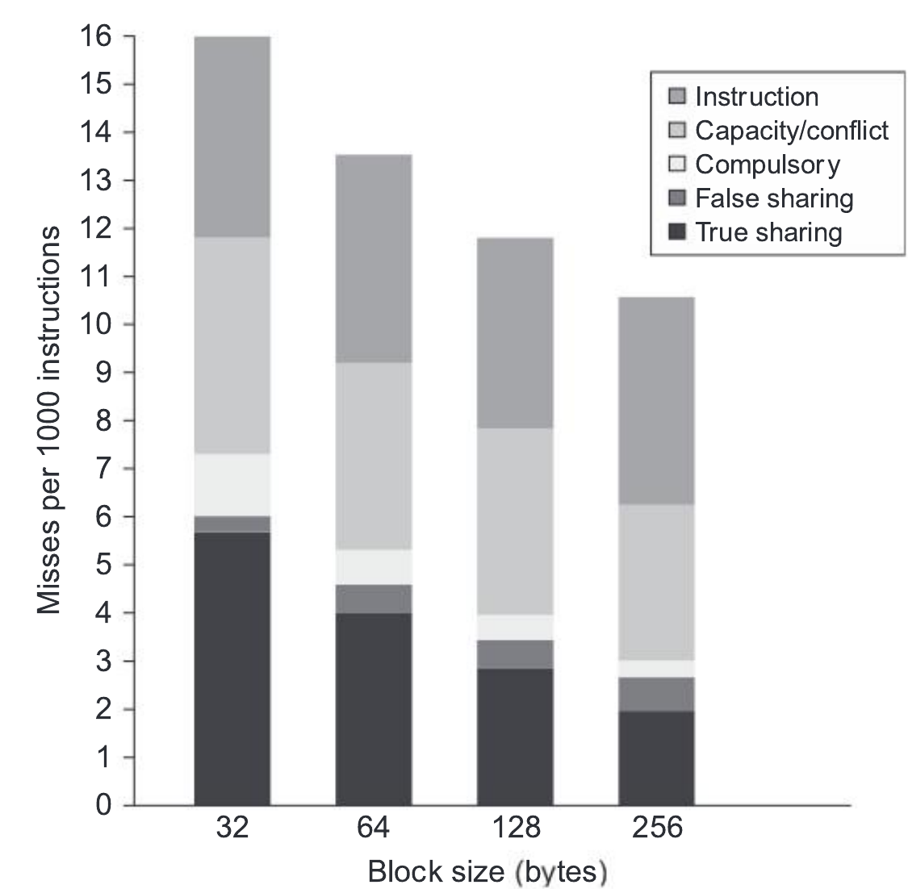

5.3 用监听维护 Cache 一致性
前面讲过，监听既可以用来维护单个处理器（及其私有 Cache）的一致性，也可以用来维护由广播介质连接起来的一小组处理器的一致性。下面假定广播介质是总线，并以多个处理器挂在一条总线上的情形来讲解协议；只有一个处理器及其各级 Cache 时，基本的监听操作完全相同。
总线的主要优点在于它能广播。一致性协议中有两项关键操作：一是作废，二是找到共享数据项的最新值。有了广播能力，这两项操作都容易实现。以作废为例，处理器只需取得总线使用权，把要作废的地址广播到总线上。所有处理器都不停地监听总线，观察总线上的地址，检查这个地址对应的数据项是否在自己的 Cache 中；如果在，就把 Cache 中的相应项置为无效。
写操作的串行化。 写一个共享块时，写的处理器必须先取得总线使用权，才能广播作废请求。如果两个处理器同时要写共享块，它们必须为总线仲裁，各自的作废广播也就因此被串行化。先取得总线的处理器会使它要写的那个块的其他所有副本无效。如果两个处理器写的是同一个块，总线强制的串行化也就把这两次写串行化了。这种方案的一个推论是：对共享数据项的写，在取得总线使用权之前不能完成（后面讨论实现细节时还会回到这个问题）。所有一致性方案都要以某种方法把对同一 Cache 块的访问串行化，办法有两种：一是把对通信介质的访问串行化，二是把对另一种共享结构的访问串行化，例如下一节将要介绍的目录。
找到最新值。 除了使正在被写的 Cache 块的其他副本无效，发生 Cache 失效时还要找到数据项的最新值。写直达 Cache 中这件事很容易：所有写入的数据总会送到存储器，数据项的最新值总能从存储器取得（写缓冲会带来一些额外的复杂性，实际上必须当作额外的 Cache 项来处理）。写回 Cache 中就难一些，因为数据项的最新值可能在某个私有 Cache 中，而不在共享 Cache 或存储器中。好在写回 Cache 处理 Cache 失效和处理写可以使用同一套监听机制：每个处理器都监听放到共享总线上的每一个地址；如果某个处理器发现自己有所请求的 Cache 块的脏副本，就由它提供这个块来响应读请求，并中止对存储器或末级 Cache（LLC，Last-Level Cache）的访问。增加的复杂性在于，要从另一个处理器的私有 Cache（L1 或 L2）中取回 Cache 块，这通常比从 LLC 中取要慢。写回 Cache 对存储带宽的需求较低，能支持更多、更快的处理器。因此，所有多核处理器的 L2、L3 Cache 都采用写回方式，下面讨论的也是写回 Cache 中一致性的实现。
用 Cache 状态位实现监听。 监听可以借助普通的 Cache tag（标签）来实现，每个块的有效位则让作废容易实现。读失效也很简单，不论它是由作废还是由其他事件引起的，只需依靠监听能力即可。对于写，我们希望知道这个块在别的 Cache 中有没有副本：在写回 Cache 中，如果没有其他副本，写就不必放到总线上。不发送这次写，既缩短了写的时间，也减少了所需的带宽。
为了记录一个 Cache 块是否共享，可以像有效位、脏位那样，给每个 Cache 块再加一个状态位，指明这个块是否共享，据此判断一次写是否必须产生作废。写一个处于共享状态的块时，Cache 在总线上发出作废，并把这个块标记为独占。此后，这个核对这个块不再发送作废。持有某个 Cache 块唯一副本的核称为这个 Cache 块的所有者（owner）。
作废发出以后，所有者的这个 Cache 块就从共享状态变为非共享（或称独占）状态。如果以后另一个处理器请求这个 Cache 块，它的状态必须重新变为共享。监听 Cache 能看到所有失效，所以它知道这个独占块什么时候被另一个处理器请求、状态什么时候应当改为共享。
减少监听对处理器的干扰。 每次总线事务都要检查 Cache 的地址 tag，这可能干扰处理器对 Cache 的访问。减少干扰的办法有两种：
- 一是把 tag 复制一份，让监听访问去查这份副本；
- 二是利用包含式 LLC。如果 LLC 是包含式的（即 L1 或 L2 中的任何数据项在 LLC 中也有），就可以用 LLC 判断是否需要监听。这样，包含式 LLC 就把失效分成两类：一类可以直接访问存储器，另一类需要监听。
近来许多多核处理器对 L2 保证包含性（但 LLC 不保证）。这时可以监听 L2，只在 L2 命中时才监听 L1。L2 可以分成多个存储体来提高带宽，从而减少争用。
协议举例
监听一致性协议通常的实现办法是在每个核中加一个有限状态控制器。这个控制器响应两方面的请求：一是本核处理器的请求，二是总线（或其他广播介质）上的请求。它改变选中的 Cache 块的状态，并通过总线访问数据或使数据无效。从逻辑上可以认为每个块各有一个控制器，也就是说，对不同块的监听操作或 Cache 请求可以独立进行。实际实现时，一个控制器允许对不同块的多个操作交错进行，即一个操作还没有完成，另一个操作就可以开始，尽管每次只允许一次 Cache 访问或一次总线访问。采用非阻塞 Cache 的处理器中，这些事务可以重叠进行，可以用 MSHR（失效状态处理寄存器）确定完成一个事务需要更新哪个 Cache 块。还要说明两点：一是下面的描述虽然以总线为例，但只要互连网络能向所有一致性控制器及其私有 Cache 广播，就可以用来实现监听；二是同一个协议也可以用来维护各个核之间的一致性，再把这些核连接到目录机制上，以获得更好的可扩展性。
下面考虑的简单协议有三个状态：无效、共享和修改。共享状态表示私有 Cache 中的这个块可能是共享的；修改状态表示这个块已经在私有 Cache 中被更新。注意，修改状态意味着这个块是独占的。图 5.5 列出了核产生的请求（表的上三分之二）和来自总线的请求（表的下三分之一）。对这个基本协议最常见的扩展是增加一个独占状态，表示一个块没有被修改，但只在一个私有 Cache 中。这一扩展和其他扩展在后面「基本一致性协议的扩展」中介绍。
图 5.5 Cache 一致性机制既接收本核处理器的请求，也接收共享总线上的请求，并根据请求的类型、在本地 Cache 中命中还是失效以及请求所指的本地 Cache 块的状态作出响应。第四列说明 Cache 操作的类型：普通命中或失效（与单处理器 Cache 所见的相同）、替换（单处理器 Cache 的替换失效）、一致性（为维持 Cache 一致性所必需）。普通操作或替换操作可能引起一致性操作，这取决于这个块在其他 Cache 中的状态。对于从总线上监听到的读失效、写失效或作废，只有读或写的地址与本地 Cache 中的某个块匹配、而且这个块有效时，才需要采取动作。
| 请求 | 来源 | 所访问 Cache 块的状态 | Cache 操作类型 | 功能与说明 |
|---|---|---|---|---|
| 读命中 | 处理器 | 共享或独占 | 普通命中 | 读本地 Cache 中的数据。 |
| 读失效 | 处理器 | 无效 | 普通失效 | 在总线上发出读失效。 |
| 读失效 | 处理器 | 共享 | 替换 | 地址冲突失效：在总线上发出读失效。 |
| 读失效 | 处理器 | 独占 | 替换 | 地址冲突失效：写回该块，然后在总线上发出读失效。 |
| 写命中 | 处理器 | 独占 | 普通命中 | 把数据写入本地 Cache。 |
| 写命中 | 处理器 | 共享 | 一致性 | 在总线上发出作废。这类操作常称为升级失效或所有权失效，因为它们并不取数据，只改变状态。 |
| 写失效 | 处理器 | 无效 | 普通失效 | 在总线上发出写失效。 |
| 写失效 | 处理器 | 共享 | 替换 | 地址冲突失效：在总线上发出写失效。 |
| 写失效 | 处理器 | 独占 | 替换 | 地址冲突失效：写回该块，然后在总线上发出写失效。 |
| 读失效 | 总线 | 共享 | 无动作 | 让共享 Cache 或存储器为读失效提供服务。 |
| 读失效 | 总线 | 独占 | 一致性 | 试图读共享数据：把该 Cache 块放到总线上，写回该块，并把状态改为共享。 |
| 作废 | 总线 | 共享 | 一致性 | 试图写共享块：使该块无效。 |
| 写失效 | 总线 | 共享 | 一致性 | 试图写共享块：使该 Cache 块无效。 |
| 写失效 | 总线 | 独占 | 一致性 | 试图写在别处独占的块：写回该 Cache 块，并在本地 Cache 中把它的状态置为无效。 |
总线上出现作废或写失效时，凡是私有 Cache 中有这个块副本的核，都要使这个副本无效。对于写回 Cache 中的写失效，如果这个块只在一个私有 Cache 中、处于独占状态，那么这个 Cache 还要把块写回；否则，数据可以从共享 Cache 或存储器中读取。
状态转换图。 图 5.6 是采用写无效协议和写回 Cache 时，单个私有 Cache 块的有限状态转换图。为简单起见，协议的三个状态画了两遍：左边是由处理器请求引起的转换，对应图 5.5 中表的上半部分；右边是由总线请求引起的转换，对应表的下半部分。图中用粗体表示总线动作，以区别于状态转换所依据的条件。每个结点中的状态，是处理器请求或总线请求所指定的那个私有 Cache 块的状态。
![图 5.6 私有写回 Cache 的写无效 Cache 一致性协议，图中给出了 Cache 中每个块的状态和状态转换。Cache 状态画在圆圈中；本地处理器无须改变状态即可进行的访问，写在状态名下方的括号里。引起状态变化的激励用常规字体标在转换弧上，状态转换过程中产生的总线动作用粗体标在转换弧上。这些激励作用于私有 Cache 中的块，而不是 Cache 中的某个特定地址。因此，对一个处于共享状态的块发生读失效，是这个 Cache 块的失效，但访问的是另一个地址。图的左边是由与这个 Cache 相连的处理器的动作引起的状态转换，右边是由总线操作引起的状态转换。处理器请求的地址与本地 Cache 块中的地址不匹配时，就会在独占或共享状态下发生读失效，在独占状态下发生写失效，这样的失效就是普通的 Cache 替换失效。试图写一个处于共享状态的块时，会产生作废。每当总线上发生一次事务，凡是包含该总线事务所指 Cache 块的私有 Cache，都要执行图中右半部分规定的动作。这个协议假定：一个块在所有本地 Cache 中都是干净的时候，读失效的数据由存储器（或共享 Cache）提供。实际实现时，这两组状态图是合在一起的。在实践中，写无效协议有许多细微的变体，包括引入独占未修改状态，以及失效时由处理器还是由存储器提供数据。在多核芯片中，共享的包含式 LLC 起着相当于存储器的作用，这里的总线是各核私有 Cache 与共享 Cache 之间的总线，共享 Cache 再与存储器相连。](images/ch05/fig-5-6.png)
这个 Cache 协议中的所有状态，在单处理器 Cache 中也都需要，分别对应无效、有效（且干净）和脏三种状态。图 5.6 左半部分用弧表示的状态变化，除了写命中共享块时的作废以外，大都是单处理器写回 Cache 也需要的；右半部分用弧表示的状态变化则只是为了一致性，在单处理器的 Cache 控制器中根本不会出现。
前面说过，每个 Cache 实际只有一个有限状态机，激励来自与它相连的处理器或总线。图 5.7 把图 5.6 右半部分的状态转换与左半部分的合在一起，形成每个 Cache 块的单一状态图。

协议为什么正确。 要理解这个协议为什么能工作，可以看到，任何有效的 Cache 块，要么在一个或多个私有 Cache 中处于共享状态，要么恰好在一个 Cache 中处于独占状态。处理器要写一个块，必须先让它转到独占状态，而任何到独占状态的转换都要求在总线上发出作废或写失效，使所有本地 Cache 中的这个块变为无效。此外，如果另有某个本地 Cache 持有这个块的独占副本，这个 Cache 就会产生一次写回，把含有所需地址的块提供出来。最后，如果总线上出现对一个独占块的读失效，持有独占副本的本地 Cache 就把这个块的状态改为共享。
图 5.7 中灰色的动作处理总线上的读失效和写失效，它们实际上就是协议中的监听部分。这个协议（以及其他大多数协议）还保持了一个性质：任何处于共享状态的存储块，在共享 LLC 或存储器中总是最新的。这一性质简化了实现。
原子性问题。 这个简单的 Cache 协议虽然正确，但省略了若干复杂情况，而这些情况使实现困难得多。其中最重要的一点是，协议假定操作都是原子的，即一个操作进行期间不会插入其他操作。实际情况并非如此，因为许多操作要花好几个时钟周期。例如，上面的协议假定，检测到写失效、取得总线、收到响应这三件事是一个原子动作，而在实际实现中这是做不到的。事实上，即使读失效也可能不是原子的：多核处理器的某个核在 L2 中检测到失效以后，必须先为连接共享 L3 或存储器的总线仲裁。后面很快会讨论如何克服这一困难。
基本一致性协议的扩展
上面介绍的一致性协议是一个简单的三状态协议，常用三个状态的首字母称为 MSI（Modified、Shared、Invalid，即修改、共享、无效）协议。这个基本协议有许多扩展，办法是增加一些状态和事务，以优化某些行为，从而可能提高性能。最常见的扩展有两种：
MESI。MESI 在基本的 MSI 协议上增加独占（Exclusive）状态，共有修改、独占、共享、无效四个状态。独占状态表示一个 Cache 块只驻留在一个 Cache 中，而且是干净的。处于 E 状态的块可以直接写，不产生任何作废。一个块先由某个 Cache 读、再由同一个 Cache 写，是常见的情形，独占状态就是为这种情形而做的优化。块一旦被写，状态就从独占变为修改。如果对处于 E 状态的块发生读失效，这个块必须改为 S 状态，以维持一致性。由于后续的所有访问都会被监听，这个状态能够始终保持准确。增加这个新状态也很容易：用编码一致性状态的那一位表示独占状态，用脏位表示块已被修改。CXL 标准采用的就是 MESI 协议，CXL 是一种互连标准，支持在处理器与加速器之间维持存储器的一致性。Intel i7 和 i9 采用 MESI 的一种变体，称为 MESIF。它增加了一个转发（Forward）状态，指定由哪一个共享该块的处理器响应失效、提供数据，目的是提高分布式存储组织的性能。
MOESI。MOESI 在 MESI 协议上增加拥有（Owned）状态，表示相应的块由这个 Cache 拥有，存储器中的副本已经过时。在 MSI 和 MESI 协议中，有处理器试图共享一个处于修改状态的块时，这个块的状态（在原来的 Cache 和新共享的 Cache 中）都改为共享，而且必须把块写回存储器。在 MOESI 协议中，原来的 Cache 可以把这个块从修改状态改为拥有状态，不必写回存储器。新共享这个块的其他 Cache 让它处于共享状态；O 状态只有原来的 Cache 持有，表示主存中的副本已经过时，并且指定的这个 Cache 是所有者。由于存储器中的数据不是最新的，块的所有者在发生失效时必须提供块的值；块被替换时，所有者还必须把它写回存储器。
AMD Opteron 处理器系列采用 MOESI 协议。近来的 AMD 处理器采用一种基于 MOESI 的协议，其中既有前面提到的 F 状态，又有 D（Dirty，脏）状态。D 状态是拥有状态的一种变体，表示存储器中的副本已经过时。
对称共享存储多处理器与监听协议的局限
多处理器中的处理器数目增多，或者每个处理器的访存需求增大，系统中任何集中的资源都可能成为瓶颈。对多核处理器来说，只有几个核，单条共享总线就已经成为瓶颈。因此，多核处理器的设计转而采用带宽更高的互连方案，以及多个独立的存储器，以容纳更多的核。5.8 节考察的几款多核芯片采用了三种不同的做法：
IBM Power 10 处理器单芯片最多有 15 个核，用 16 条并行的环连接分布式的 L3 Cache 和最多 16 个独立的存储通道。
Xeon Platinum 系列有两种形式：一种是单芯片，最多 40 个核；另一种是芯粒形式，由 4 个处理器芯片和 HBM 存储器或 Cache 组成。它用多条环把一个芯片上最多 40 个核、分布式的 60 MiB LLC 和最多 8 个存储通道连接起来（具体数目取决于配置）。最新的 Xeon 服务器处理器 Sapphire Rapids 已经发布，有 56 个核，每个芯粒有 4 个芯片，总共 224 个核。
AMD EPYC 采用基于芯粒的设计，每个芯粒 8 个核，每个插座最多 4 个芯粒，最多两个插座，总共 64 个核。每个芯粒上的 LLC 由这个芯粒共享，每个芯粒也有自己的存储通道。芯粒内部和芯粒之间的核用 Infinity Path 连接。下一代将支持最多 12 个芯粒，总共 96 个核。
Cache 失效和一致性通信会造成对共享互连网络的争用。除此以外，Cache 的监听带宽也可能成为问题，因为每个 Cache 都可能要检查每一次失效。所以，增加互连带宽可能只是把争用推到了 Cache 那里。下面的例题说明这个问题。
例题 一个 16 处理器的多核处理器，每个处理器有自己的 L1 和 L2 Cache，在 L2 Cache 一级通过共享总线进行监听。假设 L2 请求（无论是一致性失效还是其他失效）平均需要 15 个周期；时钟频率为 4.0 GHz，CPI 为 0.5，load/store 指令的频度为 40%。如果目标是一致性通信占用的 L2 带宽不超过 50%，那么每个处理器的一致性失效率（CMR）最大是多少？
解答 先写出可用的 Cache 周期数（其中 CMR 是一致性失效率）：
\[ \begin{aligned} \text{可用的 Cache 周期数} &= \frac{\text{时钟频率}}{\text{每次请求的周期数}} = \frac{4.0\ \text{GHz}}{15} = 0.27 \times 10^9 \\ \text{占用的 Cache 周期数} &= \text{每个处理器每个时钟的访存次数} \times \text{时钟频率} \times \text{处理器数} \times 2 \times \text{CMR} \\ &= \frac{0.4}{0.5} \times 4.0\ \text{GHz} \times 16 \times 2 \times \text{CMR} = 102 \times 10^9 \times \text{CMR} \\ \text{CMR} &= \frac{0.27}{102} = 0.0026 = 0.26\% \end{aligned} \]
也就是说，CMR 必须不超过 0.26%。下一节和附录 I 中会看到，有好几个应用的 CMR 超过 1%。反过来，如果假定 CMR 可以达到 1%，那么只能支持 4 个处理器。可见，即使是小规模的多核处理器，也需要某种扩展监听带宽的方法。
提高监听带宽的技术。 提高监听带宽的技术有以下几种：
复制 tag。这样，Cache 一级的有效监听带宽提高到原来的 2 倍，但 Cache 很大时代价很高；而且，如果复制的 tag 表明监听命中，仍然要访问主 tag。如果 L2 有多个存储体（近来的许多设计都是这样），监听带宽也能有效提高。
如果多核处理器上的 LLC 是共享的、包含式的，可以先把监听送到 LLC，只有在 LLC 中命中时才去查询 L2 Cache（如果不命中，就可以断定数据不可能在 L2 中）。把 LLC 分成多个存储体，还能提高 LLC 的带宽。IBM Power 10 就采用这种做法，它形成一种非一致 Cache 访问（NUCA，NonUniform Cache Access）设计，但能使 LLC 一级的监听带宽随存储体数成比例地扩展。如果在 LLC 中监听命中，仍然必须向所有 L2 Cache 广播，各 L2 Cache 再监听自己的内容。注意，这种做法要求 LLC 必须是包含式的。后面将会看到，Power 10 采用了一种复杂的一致性方案（继承自早期的 Power 处理器），力求尽量减少广播监听。
目录方案避开了监听和广播，是扩展一致性带宽的另一种方法。目录方案不依靠共享的广播机制来串行化操作，因此必须用请求—响应机制来获知一次一致性操作何时完成。5.4 节介绍基于目录的方案如何工作。
AMD Opteron 代表了监听协议与目录协议之间的另一个中间点。在 Opteron 中，存储器直接连到每个多核插座上，最多可以连接 4 个多核插座。由于本地存储器要快一些，这种系统属于 NUMA（NonUniform Memory Access，非均匀存储访问）。Opteron 用点对点链路向最多 3 个其他芯片广播，以此实现一致性协议。由于处理器间的链路不是共享的，处理器要知道一次作废操作何时完成，唯一的办法是显式应答。因此，这个一致性协议像监听协议一样用广播找到可能共享的副本，又像目录协议一样用应答来给操作排序。在 Opteron 的实现中，本地存储器只比远程存储器略快，所以有些软件把 Opteron 多处理器当作均匀存储访问的系统来对待。
监听 Cache 一致性的实现
魔鬼藏在细节中。
——经典谚语
1990 年我们写本书第 1 版时，最后一节「融会贯通」介绍的是一台 30 个处理器的单总线多处理器，采用基于监听的一致性；它的总线容量只有 50 MiB/s 多一点，放到 2023 年，连 Intel i9 的一个核都不够用。1995 年写第 2 版时，第一批采用多条总线的 Cache 一致性多处理器刚刚出现，我们为此增加了一个附录，介绍多总线系统中监听的实现。到 2024 年，所有超过 4 个核的多核系统，在封装内部都采用间接的片上互连（既不是总线，也不是交叉开关），这种间接网络还扩展到多个芯片，以把它们连接成 Cache 一致的多处理器。因此，即使在单个芯片内部，设计者也必须面对这样的挑战：没有总线来串行化事件，同样要实现监听（或目录方案）。
实现前面给出的一致性协议，需要两个性质：
原子性：一致性事件（如取得独占访问权）虽然要花多个时钟周期才能完成，看起来却必须是原子的。所谓一个事件看起来是原子的，就是其他任何插入的事件都不能改变它的结果。
可串行性：一致性事件看起来必须按某种串行顺序发生，并且所有处理器看到的都是同一个顺序。
两个性质只要有一个不成立，两个处理器就可能看到同一数据项的不同值，说明系统不一致。
可串行性比较容易做到。一致性协议必须保证：对某一特定地址的所有访问都经过一个公共点，这个公共点可以是总线、共享 LLC 或者某个存储模块。公共点迫使可能冲突的访问排出先后，从而保证这些访问被串行化。此外，协议在代表 CPU 发起一个新事务之前，还应当先处理完总线（或其他通信网络）上所有待处理的请求。
原子性是实际实现监听一致性协议时更大的困难。在近来的任何多处理器中，写失效和升级失效本身都不是原子的。处理一次写失效或升级失效要经过几个步骤：检测到失效；与其他处理器和存储器通信；对写失效，取得最新的值，并确保所有作废都已处理；最后更新 Cache。这些步骤不可能像在一个周期内完成那样进行。
在单总线的多核处理器中，办法是先为通往共享 Cache 或存储器的总线仲裁（在改变 Cache 状态之前），并且一直占住总线，直到所有动作完成，这样这些步骤实际上就成了原子的。处理器怎样知道所有作废都已完成呢？早期的设计用一根状态线来发出信号，表明所有必要的作废都已收到、正在处理。收到这个信号后，产生失效的处理器就可以释放总线，因为它知道，所有必需的动作都会在与下一次失效有关的任何活动之前完成。处理器在这些步骤期间独占总线，实际上就使各个步骤成为原子的。注意，没有共享总线，这种做法根本不可能实现；而且它与非阻塞 Cache 也不相容。
没有共享总线时，正在处理读失效或写失效（包括升级失效）的处理器，必须能够接收外来的事务，使这个块无效，然后重新发起读请求或写请求。
瞬态。 理解和实现这种协议最简单的办法，是在协议中增加额外的瞬态。需要通信的核在每个事务中设置这些额外的「隐藏」状态。称它们为瞬态，是因为它们等待的是存储系统中某个动作的完成，而不是核的新请求。处于瞬态时，如果从系统收到（由另一个核产生的）写失效或作废，就把 Cache 块的状态改为无效，核重新执行这次访问（这时必定失效）。隐藏状态的作用和工作方式用表来说明更容易理解，见图 5.8。这些瞬态让被其他动作打断的动作重新开始，从而实际上使协议动作成为原子的。
共享存储多处理器的性能
采用监听一致性协议的多核处理器，性能由几种不同的现象共同决定。就 Cache 而言，总体性能取决于两部分流量：一部分是单处理器本来就有的 Cache 失效流量，另一部分是一致性事务引起的流量，这些事务会作废其他 Cache 中的块，从而造成后续的 Cache 失效。处理器数目、Cache 容量和块大小发生变化时，对失效率的这两个组成部分影响各不相同，系统的总体行为是两方面效果叠加的结果。
图 5.8 隐藏的瞬态及其操作。表中列出了需要增加的 7 个状态。这些状态是瞬态：「等待」一栏中的事务完成后，状态就变为「成功后的状态」一栏所列的状态，这与基本一致性协议中的状态变化相同。但如果在挂起的事务完成之前，收到了针对同一块的写失效或作废，该块的状态就变为无效，事务必须从无效状态重新开始。由于块已经无效，此时只可能发生读失效或写失效。注意，图 5.6 和图 5.7 中的写回操作也必须完成。先完成写回比较简单；如果把写回放进缓冲，那么到来的事务还必须监听缓冲中的内容。
| Cache 状态 | 核的操作 | 等待 | 成功后的状态 |
|---|---|---|---|
| 无效（Invalid） | 读失效 | 失效返回 | 共享（Shared） |
| 无效（Invalid） | 写失效 | 失效返回 | 独占（Exclusive） |
| 共享（Shared） | 读失效 | 失效返回 | 共享（Shared） |
| 共享（Shared） | 写命中 | 作废完成 | 独占（Exclusive） |
| 共享（Shared） | 写失效 | 失效返回 | 独占（Exclusive） |
| 独占（Exclusive） | 读失效 | 失效返回 | 共享（Shared） |
| 独占（Exclusive） | 写失效 | 失效返回 | 独占（Exclusive） |
一致性失效的两个来源。 附录 B 把单处理器的失效按 3C 分为容量失效、强制失效和冲突失效三类，借此既能看清应用程序的行为，也能找到改进 Cache 设计的方向。处理器之间通信引起的失效通常称为一致性失效，同样可以按来源分成两类。
第一类是真共享失效，它是数据经由 Cache 一致性机制进行通信而产生的。在基于作废的协议中，处理器第一次写一个共享的 Cache 块时，要发出作废，以取得该块的所有权；此后另一个处理器读这个 Cache 块中被修改过的字时，会发生失效，并把相应的块传送过来。这两种失效都直接来自处理器之间的数据共享，所以都归为真共享失效。
第二类称为伪共享。一致性算法基于作废、而每个 Cache 块只有一个有效位时，就会出现伪共享。所谓伪共享，是指一个块中被读的字本身没有被写，但块中其他某个字被写了，于是整个块被作废，随后的访问因此失效。判断的方法是看被写的字：
- 如果被写的字正是收到作废的那个处理器要使用的，那么这次访问属于真共享访问，不管块多大都会失效；
- 如果被写的字与被读的字不同（只是位于同一个 Cache 块中），作废并没有传递任何新值，只是多造成了一次 Cache 失效，这就是伪共享失效。
发生伪共享失效时，块是共享的，但块中没有任何一个字真正被共享；如果块大小只有一个字，这次失效就不会发生。下面的例子可以把这几种共享模式说清楚。
例题 假设字 z1 和 z2 位于同一个 Cache 块中，该块在 P1 和 P2 的 Cache 中都处于共享状态。对于下面的事件序列，判断每次失效是真共享失效、伪共享失效，还是命中。凡是块大小为一个字时也会发生的失效，都算作真共享失效。
| 时间 | P1 | P2 |
|---|---|---|
| 1 | 写 z1 | |
| 2 | 读 z2 | |
| 3 | 写 z1 | |
| 4 | 写 z2 | |
| 5 | 读 z2 |
解答 按时间步逐一分类如下：
- 真共享失效。z1 在 P2 中处于共享状态，必须从 P2 中作废。
- 伪共享失效。z2 所在的块因 P1 写 z1 而被作废，但 P2 并不使用 z1 的这个值。
- 伪共享失效。由于 P2 的读，含有 z1 的块被标记为共享，但 P2 读的并不是 z1。P2 读过之后，含有 z1 的 Cache 块处于共享状态，P1 要取得对该块的独占访问，就需要一次写失效。有些协议把这种情况作为升级请求处理，只产生一次总线作废，不传送 Cache 块。
- 伪共享失效，理由与第 3 步相同。
- 真共享失效，因为读的值是 P2 写入的。
商业工作负载中也能看到真共享失效和伪共享失效的影响，但一致性失效对紧密耦合、共享大量用户数据的应用影响更大。附录 I 讨论并行科学计算工作负载的性能时，将详细考察这些影响。
小规模多处理器上的商业工作负载
本节考察一台 4 处理器共享存储多处理器在运行联机事务处理工作负载时的存储系统行为。所依据的研究是 1998 年在一台 4 处理器 Alpha 系统上完成的，但直到今天，对多处理器在这类工作负载下的性能，它仍是最全面、最有见地的研究。我们关注的是多处理器的 Cache 活动，尤其是 L3 的行为，因为 L3 中的流量有很大一部分与一致性有关。
研究结果有的是在 AlphaServer 4100 上实测的，有的是用一个以 AlphaServer 4100 为原型、可配置的模拟器得到的（见 Barroso 等人 [1998]）。AlphaServer 4100 中的每个处理器都是 Alpha 21164，每个时钟周期最多发射 4 条指令，时钟频率为 300 MHz。这个系统中 Alpha 处理器的时钟频率比近年设计的系统低得多，但系统的基本结构与多核的 Intel i7、i9 等处理器非常相似：都由四发射的处理器和三级 Cache 层次构成，只是 Cache 比新的多核处理器小（见图 5.9）。我们不关注性能细节，而是考察模拟得到的 L3 行为数据，L3 容量从每个处理器 2 MiB 变化到 8 MiB。
原始研究考察了三种工作负载，这里只讨论其中的联机事务处理（OLTP）工作负载。它以 TPC-B 为模型（TPC-B 的存储行为与第 1 章介绍的较新的 TPC-C 相似），底层数据库为 Oracle 7.3.2。该工作负载由两组进程组成：一组客户进程产生请求，一组服务器进程处理请求。服务器进程占用 85% 的用户时间，其余用户时间归客户进程。经过仔细调优，并且有足够多的请求让处理器保持忙碌，I/O 延迟得以隐藏；但服务器进程通常每执行大约 25000 条指令就会因 I/O 而阻塞。从总的执行时间看，71% 花在用户态，18% 花在操作系统中，11% 处于空闲，空闲主要是在等待 I/O。在所研究的几种商业应用中，OLTP 应用对存储系统的压力最大，即使用容量大得多的 L3 Cache 来评估，也仍然面临相当大的困难。例如，在 AlphaServer 上，处理器大约 90% 的周期处于停顿状态；在停顿时间中，L3 失效引起的访存占了将近一半，L2 失效占了 25%。
图 5.9 本研究所用 Alpha 21164 与 Intel i7 的 Cache 层次特性。i7 的 Cache 容量更大、相联度更高，但失效开销也更大，因此两者的行为可能只有细微差别。两个系统从私有 Cache 传送数据都需要很高的开销（125 个周期或更多）。一个关键区别是：i7 的 L3 是共享的，而 Alpha 服务器中是 4 个各自独立、不共享的 L3 Cache。
| Cache 级 | 特性 | Alpha 21164 | Intel i7 |
|---|---|---|---|
| L1 | 容量 | 8 KB I/8 KB D | 32 KB I/32 KB D |
| 相联度 | 直接映射 | 8 路 I/8 路 D | |
| 块大小 | 32 B | 64 B | |
| 失效开销 | 7 | 10 | |
| L2 | 容量 | 96 KB | 256 KB |
| 相联度 | 3 路 | 8 路 | |
| 块大小 | 32 B | 64 B | |
| 失效开销 | 21 | 35 | |
| L3 | 容量 | 2 MiB（共 8 MiB，不共享） | 每核 2 MiB（共 8 MiB，共享） |
| 相联度 | 直接映射 | 16 路 | |
| 块大小 | 64 B | 64 B | |
| 失效开销 | 80 | 约 100 |
L3 容量的影响。 先考察 L3 Cache 容量变化的影响。研究中 L3 的容量从每个处理器 1 MiB 变化到 8 MiB；每个处理器 2 MiB 时，L3 的总容量与 Intel i7 6700 相同。不过 i7 的 L3 是共享的，这样做有利也有弊。共享的 8 MiB Cache 不大可能比总容量为 16 MiB 的几个独立 L3 Cache 性能更好。图 5.10 给出了增大 Cache 容量的效果，这里采用两路组相联 Cache，以减少大量的冲突失效。L3 增大后，L3 失效减少，执行时间随之缩短。出人意料的是，几乎全部的收益都出现在从 1 MiB 增大到 2 MiB 这一步（4 个处理器的 Cache 总容量从 4 MiB 增大到 8 MiB）。再往上增大，收益就很小了，尽管在 2 MiB 和 4 MiB 时，Cache 失效仍然造成相当大的性能损失。这是为什么？

要回答这个问题，需要弄清哪些因素构成了 L3 失效率，以及 L3 增大时这些因素怎样变化。图 5.11 给出了这些数据，显示五种来源各自贡献的每条指令访存周期数。L3 为 1 MiB 时，L3 访存周期的两个最大来源是指令失效和容量/冲突失效；L3 增大后，这两个来源都缩小为次要因素。然而，强制失效、伪共享失效和真共享失效并不随 L3 增大而减少。因此，在 4 MiB 和 8 MiB 时，真共享失效在失效中占了主要部分；真共享失效没有变化，所以 L3 超过 2 MiB 以后再增大容量，总失效率下降得很有限。

处理器数目的影响。 增大 Cache 容量消除了大部分单处理器失效，多处理器失效却丝毫未减。那么，增加处理器数目对各类失效有什么影响？图 5.12 给出了这方面的数据，基本配置为 2 MiB、两路组相联的 L3 Cache（每个处理器的有效 Cache 容量与 i7 相同，但相联度较低）。不出所料，真共享失效率上升了，而单处理器失效并没有相应减少来抵消，所以每条指令的访存周期数总体增加。

块大小的影响。 最后考察的问题是：增大块对这个工作负载是否有帮助？块增大后，指令失效率和冷失效率应当下降；在一定范围内，容量/冲突失效率也会下降，真共享失效率也可能下降。图 5.13 给出了块大小从 32 字节增大到 256 字节时每 1000 条指令的失效次数。块从 32 字节增大到 256 字节，影响了失效率的四个组成部分：
- 真共享失效率降为原来的 1/2 以下，说明真共享模式具有一定的局部性；
- 强制失效率显著下降，这在意料之中；
- 冲突/容量失效略有下降（块大小增大到原来的 8 倍，冲突/容量失效只降为原来的 1/1.26），说明 L3 大于 2 MiB 时，剩下的单处理器失效空间局部性不高；
- 伪共享失效率虽然绝对值不大，却增加到原来的将近 2 倍。

指令失效率几乎不受影响，这一点令人吃惊。假如有一个只存指令的 Cache 表现出这种行为，我们就会得出结论：指令的空间局部性非常差。L2 和 L3 是指令和数据混合的 Cache，块较大时，指令与数据之间的冲突等其他因素也可能导致指令失效率居高不下。其他研究也证实，大型数据库和 OLTP 工作负载的指令流空间局部性很低，因为这类负载有大量短小的基本块和专用代码序列。根据这些数据，块较大的 L3 要与 32 字节块的 L3 性能相当，所需的失效开销可以表示为 32 字节块失效开销的倍数：
| 块大小 | 失效开销与 32 字节块失效开销之比 |
|---|---|
| 64 字节 | 1.19 |
| 128 字节 | 1.36 |
| 256 字节 | 1.52 |
现代 DDR SDRAM 能够快速进行块访问，这些数字是可以达到的，64 字节（i7/i9 的块大小）和 128 字节的块尤其如此。当然，还必须考虑访存流量增加的影响，以及与其他核争用存储器的可能。后一种影响很容易抵消单个处理器性能提高带来的收益。5.4 节将考察规模更大、基于 NUMA 的多处理器在一种可扩展性很好但耦合松散的工作负载下的性能特点。